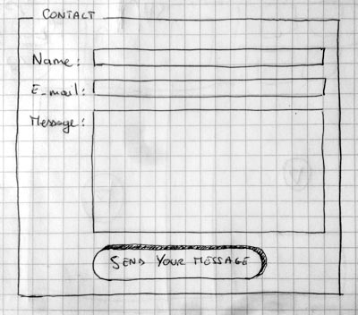
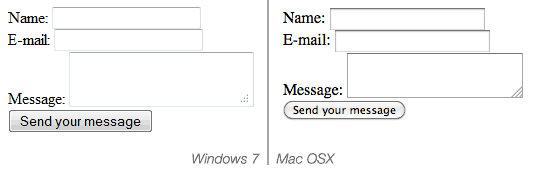
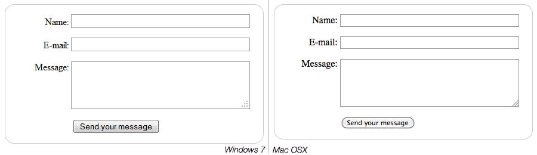

This is an introductory article to HTML Forms. Through a simple contact form, we'll see all the basic requirements to build HTML Forms. This article assumes you don't know anything about HTML Forms but assumes you know the basics of HTML and CSS.
Before we start
What are HTML forms?
HTML Forms are one of the main points of interaction between a user and a web site or application. They allow users to send data to the web site. Most of the time that data is sent to the web server, but the web page can also intercept it to use it on its own.
An HTML Form is made of one or more widgets. Those widgets can be text fields (single line or multiline), select boxes, buttons, checkboxes, or radio buttons. Most of the time, those widgets are paired with a label that describes their purpose.
What do you need to work with forms?
You need nothing more than what is required to work with HTML: a text editor and a web browser. Of course, if you are used to it, you can take advantage of a full IDE such as Visual Studio, Eclipse, Aptana, etc., but it's up to you.
The main difference between an HTML form and a regular HTML document is that, most of the time, the data collected by the form is sent to a web server. In that case, you need to set up a web server to receive and process the data. How to set up such a server is beyond the scope of this article, but if you want to know more, see the article dedicated to this topic: Sending and retrieving form data.
Designing your form
Before starting to code, it's always better to step back and take the time to think about your form. Designing a quick mockup will help you to define the right set of data you want to ask to your user. From a user experience (UX) point of view, it's important to remember that the bigger your form, the more you risk losing users. Keep it simple and stay focused: ask only for what you absolutely need. Designing forms is an important step when you are building a site or application. It's beyond the scope of this article to cover forms, but if you want to dig into that topic you should read the following articles:
- Smashing Magazine has very good articles about forms UX, but perhaps the most important is their Extensive Guide To Web Form Usability.
- UXMatters is also a very thoughtful resource with good advice from basic best practices to complex concerns such as multi-page forms.
In this article we'll build a simple contact form. Let's make a rough sketch.

Our form will contain three text fields and one button. Basically, we ask the user for their name, their e-mail and the message they want to send. Hitting the button will just send the data to the web server.
Get your hands dirty with HTML
Ok, now we're ready to go to HTML and code our form. To build our contact form, we will use the following HTML elements: <form>, <label>, <input>, <textarea>, and <button>.
The <form> element
All HTML forms start with a <form> element like this:
<form action="/my-handling-form-page" method="post"> </form>
This element formally defines a form. It's a container element like a <div> or <p> element, but it also supports some specific attributes to configure the way the form behaves. All of its attributes are optional but it's considered best practice to always set at least the action attribute and the method attribute.
- The
actionattibute defines the location (an URL) where the form's collected data should be sent. - The
methodattribute defines which HTTP method to send the data with (it can be "get" or "post").
If you want to dig into how those attributes work, it is detailed in the Sending and retrieving form data article.
Add widgets with the <label>, <input>, and <textarea> elements
Our contact form is really simple and contains three text fields, each with a label. The input field for the name will be a basic single-line text field; the input field for the e-mail will be a single-line text field that will accept only an e-mail address; the input field for the message will be a basic multiline text field.
In terms of HTML code we'll get something like this:
<form action="/my-handling-form-page" method="post">
<div>
<label for="name">Name:</label>
<input type="text" id="name" />
</div>
<div>
<label for="mail">E-mail:</label>
<input type="email" id="mail" />
</div>
<div>
<label for="msg">Message:</label>
<textarea id="msg"></textarea>
</div>
</form>
The <div> elements are there to conveniently structure our code and make styling easier (see below). Note the use of the for attribute on all <label> elements; it's a formal way to link a label to a form widget. This attribute references the id of the corresponding widget. There is some benefit to doing this. The most obvious one is to allow the user to click on the label to activate the corresponding widget. If you want a better understanding of the other benefits of this attribute, everything is detailed in the article: How to structure an HTML form.
On the <input> element, the most important attribute is the type attribute. This attribute is extremely important because it defines the way the <input> element behaves. It can radically change the element so pay attention to it. If you want to know more about this, go to read the native form widgets article. In our example we only use the value text—the default value for this attribute. It represents a basic single-line text field that accepts any kind of text without control or validation. We also use the value email that defines a single-line text field that only accepts a well-formed e-mail address. This last value turns a basic text field into a kind of "intelligent" field that will perform some checks on the data typed by the user. If you want to know more about form validation, we'll detail this in the Form data validation article.
Last but not least, note the syntax of <input /> vs. <textarea></textarea>. This is one of the oddities of HTML. The <input> tag is an auto-closing element, which means that if you want to formally close the element, you have to add a "/" at the end of the element itself and not a closing tag. On the contrary, <textarea> is not an auto-closing element, so you have to close it with the proper ending tag. This has an impact on a specific feature of HTML forms: the way you define the default value. To define the default value of an <input> element you have to use the value attribute like this:
<input type="text" value="by default this element is filled with this text" />
On the contrary, if you want to define the default value of a <textarea>, you just have to put that default value between the starting and ending tag of the <textarea> element, like this:
<textarea>by default this element is filled with this text</textarea>
And a <button> to finish
Our form is almost ready; we just have to add a button to allow the user to send their data once they have filled out the form. This is simply done by using the <button> element:
<form action="/my-handling-form-page" method="post">
<div>
<label for="name">Name:</label>
<input type="text" id="name" />
</div>
<div>
<label for="mail">E-mail:</label>
<input type="email" id="mail" />
</div>
<div>
<label for="msg">Message:</label>
<textarea id="msg"></textarea>
</div>
<div class="button">
<button type="submit">Send your message</button>
</div>
</form>
A button can be of three types: submit, reset, or button.
- A click on a
submitbutton sends the form's data to the web page defined by theactionattribute of the<form>element. - A click on a
resetbutton resets all the form widgets to their default value immediately. From a UX point of view, this is considered bad practice. - A click on a
buttonbutton does... nothing! That sounds silly, but it's amazingly useful to build custom buttons with JavaScript.
Note that you can also use the <input> element with the corresponding type to produce a button. The main difference with the <button> element is that the <input> element only allows plain text as its label whereas the <button> element allows full HTML content as its label.
Let's make it a bit nicer with CSS
Now that we have our HTML form, if you look at it in your favorite browser, you'll see that it looks kind of ugly.

Let's make it a little nicer with the following CSS stylesheet.
Let's start with the form itself; let's center it and make it visible with a border:
form {
/* Just to center the form on the page */
margin: 0 auto;
width: 400px;
/* To see the outline of the form */
padding: 1em;
border: 1px solid #CCC;
border-radius: 1em;
}
Then, we will add some space between each of the form widgets:
form div + div {
margin-top: 1em;
}
Now let's focus on the labels. To make our form more readable, it's considered best practice to have all the labels the same size and aligned along the same side. In that case, we will align them to the right, but in some cases left alignment can be okay too.
label {
/* To make sure that all labels have the same size and are properly aligned */
display: inline-block;
width: 90px;
text-align: right;
}
One of the hardest things to do with HTML forms is to style HTML widgets themselves. Text fields are easy to style, but some other widgets are not. If you want to know more about styling HTML form widgets, go read the Styling HTML forms article.
Here we will use a few common tricks: harmonizing fonts, size, and borders:
input, textarea {
/* To make sure that all text fields have the same font settings
By default, textareas have a monospace font */
font: 1em sans-serif;
/* To give the same size to all text field */
width: 300px;
-moz-box-sizing: border-box;
box-sizing: border-box;
/* To harmonize the look & feel of text field border */
border: 1px solid #999;
}
HTML forms support a lot of pseudo-classes to describe the states of each element. As an example, we will add a little highlight when a widget is active. It's a convenient way to help the user keep track of where they are in the form.
input:focus, textarea:focus {
/* To give a little highlight on active elements */
border-color: #000;
}
Multiline text fields need a few custom styles on their own. By default, a <textarea> element is an inline block with its bottom aligned to the text baseline. Most of the time, this is not what we want. In that case, to nicely align the label and the field, we have to change the vertical-align property of the <textarea> to top.
Note also the use of the resize property, which is a convenient way to let users resize a <textarea>.
textarea {
/* To properly align multiline text fields with their labels */
vertical-align: top;
/* To give enough room to type some text */
height: 5em;
/* To allow users to resize any textarea vertically
It does not work on every browsers */
resize: vertical;
}
Many times, the buttons need special styles as well. To that end, we put them inside a <div> with a class button. Here, we want the button to be aligned with the other widgets. To achieve that, we have to mimic the presence of a <label>. This is done by playing with padding and margin.
.button {
/* To position the buttons to the same position of the text fields */
padding-left: 90px; /* same size as the label elements */
}
button {
/* This extra margin represent roughly the same space as the space
between the labels and their text fields */
margin-left: .5em;
}
Now our form looks much prettier.

Sending the data to your web server
The last part, and maybe the trickiest, is to handle form data on the server side. As we said before, most of the time, an HTML Form is a convenient way to ask the user for data and to send it to a web server.
The <form> element will define where and how to send the data thanks to the action attribute and the method attribute.
But it's not enough. We also need to give a name to our data. Those names are important on both sides; on the browser side, it tells the browser which name to give each piece of data, and on the server side, it lets the server handle each piece of data by name.
So to name your data you need to use the name attribute on each form widget that will collect a specific piece of data:
<form action="/my-handling-form-page" method="post">
<div>
<label for="name">Name:</label>
<input type="text" id="name" name="user_name" />
</div>
<div>
<label for="mail">E-mail:</label>
<input type="email" id="mail" name="user_email" />
</div>
<div>
<label for="msg">Message:</label>
<textarea id="msg" name="user_message"></textarea>
</div>
<div class="button">
<button type="submit">Send your message</button>
</div>
</form>
In our example, the form will send 3 pieces of data, named "user_name", "user_email" and "user_message". That data will be sent to the URL "/my-handling-form-page" with the HTTP POST method.
On the server side, the script at the URL "/my-handling-form-page" will receive the data as a list of 3 key/value items embodied in the HTTP request. The way this script will handle that data is up to you. Each server-side language (PHP, Python, Ruby, Java, C#, etc.) has its own mechanism. It's beyond the scope of this guide to go deeply into that subject, but if you want to know more, we will give some examples on the Sending and retrieving form data article.
Conclusion
Congratulations! You've built your very first HTML form. Here is a live example of the end result.
| Live example |
|---|
Now it's time to take a deeper look. HTML forms are way more powerful than what we saw here and the other articles of this guide will help you to master the rest.
{kind=link}